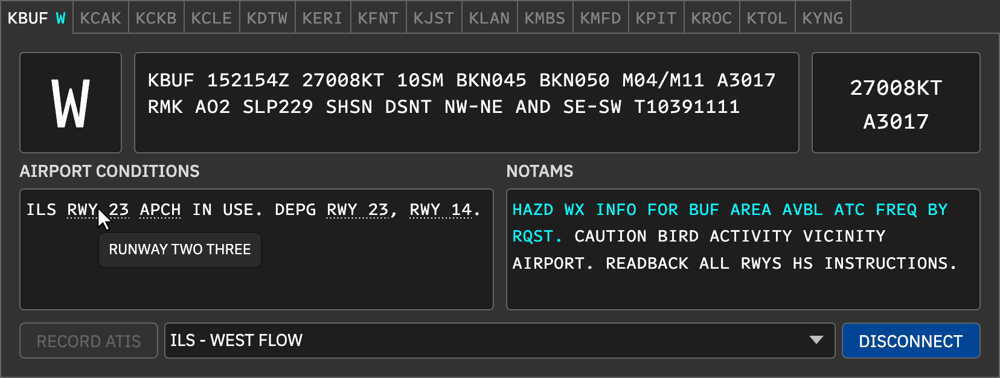
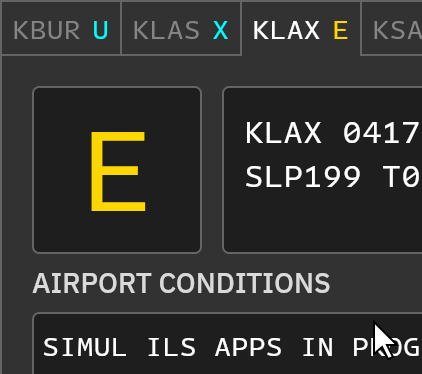
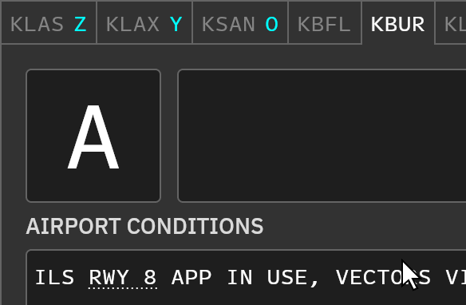
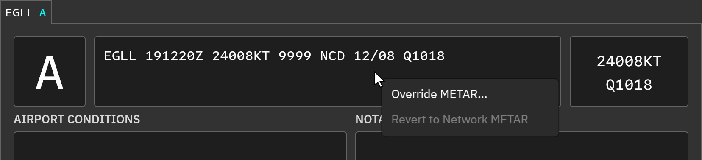
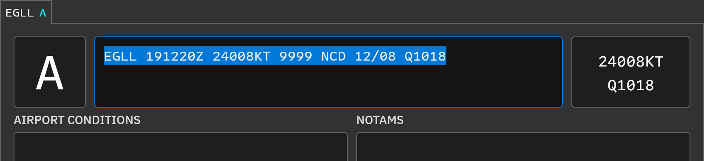
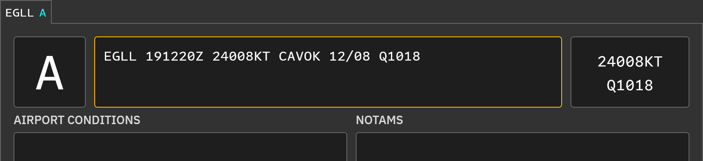
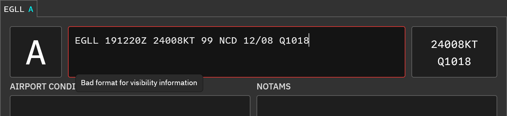

ATIS 席位
每个席位在主界面中独立显示，连接后以青色突出当前字母。固定机场运行情况和通告也以青色只读文字展示，需要在对应管理窗口修改。
发音预览下划线
编辑器以点状下划线标记“显示与发音不同”的文字，悬停可查看实际语音文本，例如 RWY 23 → RUNWAY TWO THREE。标记包括：
- 自定义或服务端默认缩略语；
- 跑道、滑行道，如
RWY 25R、TWY E16； - 成组数字，如
*5058； - 带加号的机场或导航台，如
+KLAX。
下划线仅供编辑预览，不写入 ATIS。预设及沙盒编辑器也提供相同功能。详见文本解析。
新情报更新
更新准备完成后，席位字母闪烁；若提示音开启，还会播放提示。选择席位并左键点击字母确认。已确认后可继续用左键 / 右键调整字母。
手动输入字母
在字母框上 Shift+左键双击进入编辑，输入字母并按 Enter 确认，Esc 取消。字母必须在席位配置的范围内。
临时覆盖 METAR
- 席位已连接时，右键 METAR 框，选择 Override METAR…。
- 蓝色边框表示可编辑，输入完整的机场 METAR。
- Enter 应用；Esc 或点击其他区域取消。
覆盖后文字、语音文本、风、气压和 WebSocket 输出使用新 METAR，并按更新逻辑推进字母。若内容没有变化则不更新。活动覆盖使用琥珀色边框；解析失败显示红色边框，悬停可查看错误。
选择 Revert to Network METAR 恢复网络报文。新网络 METAR 到达或席位断开后，覆盖自动清除；覆盖不会保存到预设或配置。
获取真实 D-ATIS 字母
在用户设置启用自动获取字母后，客户端可尝试从 CAN 数字情报接口加载受支持机场字母。仅取字母不会同时导入机场运行情况或通告。
获取真实 D-ATIS 内容
- 启用 Automatically fetch D-ATIS。
- 创建名为 D-ATIS 的预设并选中，名称不区分大小写。
- 客户端立即尝试获取，此后选中该预设期间每 5 分钟刷新。
- 切换其他预设停止自动刷新。
Combined 席位优先使用综合情报，没有时可回退离场情报；Arrival / Departure 使用对应类型。没有数据时显示 D-ATIS NOT AVBL.。
开头的机场、字母、天气以及结尾的确认句会被剥离，仅保留运行情况和通告，并应用缩略语。自动获取内容不直接保存到预设，自己的编辑才会保存。可在预设的 D-ATIS 设置调整替换规则。
CAN 的共享情报状态
原版的跨用户字母同步、共享运行情况以及断线后保留 5 分钟都依赖原版 ATIS Hub。CAN 当前未接通该服务，本页不把这些行为作为可用功能；接班时需与上一席位使用者协调。
操作截图参考
以下为上游原版截图，保留英文标签。用于定位操作；品牌、登录字段与网络行为以本页 CAN 说明为准。






